enterprise-grade proposal deck
Vinmec × VinSmartFuture
Citation-grounded Medical Record Summarization PoC
Evidence-first AI draft workflow with clinician review, citation validation, auditability and proxy evaluation.
local staging demo-ready PoC
research-first pilot foundation
production-readiness roadmap
Clinical boundary
Clinician-review-only AI draft
De-identified / mock / proxy data
Not a clinical deployment
No autonomous diagnosis, treatment recommendation or prescribing
Problem
Medical records are fragmented across encounters, notes, medications, timelines and prior summaries.
Solution
A citation-grounded RAG workflow creates clinician-review-only AI drafts from scoped evidence.
Proof
The local staging demo-ready PoC includes doctor/admin UI, benchmark visibility, test/build evidence and artifacts.
Boundary
The deck uses proxy evaluation only; it does not claim clinical safety, effectiveness, real EHR validation or hospital deployment.
One message: the project is designed to make evidence and uncertainty visible before a clinician decides.
01Context & Problem
02Proposed Solution
03Doctor Workflow
04Evaluation & Evidence
05Technical Readiness
06Research Pilot Roadmap
Fragmented medical records
Key facts may sit across multiple notes, encounters and documents.
Hallucination / omission risk
Generic LLM summaries can sound fluent while missing or adding critical facts.
Lack of source traceability
Without citations, reviewers cannot quickly verify the draft against evidence.
01Evidence Retrieval
Retrieve patient/encounter-scoped chunks before generation.
02Citation Validation
Link important generated claims back to source evidence.
03Clinician Final Control
Drafts remain editable, rejectable and review-only.
RAG helps organize evidence. It does not replace clinical judgment or validate clinical correctness by itself.
01Patient / Encounter Scope
02Evidence Retrieval
03AI Draft
04Citation Validation
05Clinician Review
06Final Summary
07Audit Trail
The workflow is deliberately gated: source evidence is retrieved and validated before the clinician accepts any final summary.
01Doctor and admin workspacesRole-specific navigation for clinical review and evaluation workflows.
02Evidence-first summarization flowThe product entry frames summarization around reviewable evidence.
03Local staging boundaryDemo-ready locally; no hospital deployment claim.
Entry
 Figure 1 — Product Landing Page
Figure 1 — Product Landing Page
Access
 Figure 2 — Role-Based Login Page
Figure 2 — Role-Based Login Page
Product entry
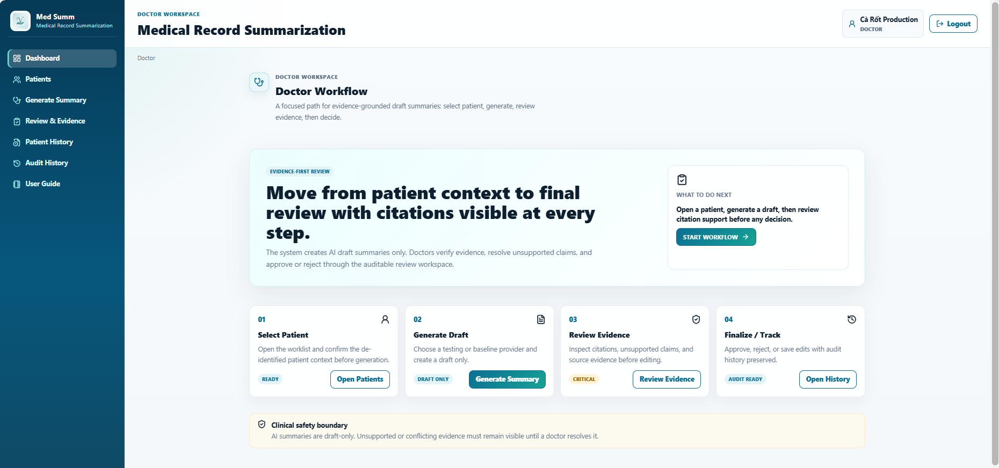
Figure 4 — Doctor Workspace Overview
Patient scope
 Figure 5 — De-identified Patient List
Figure 5 — De-identified Patient List
Encounter context
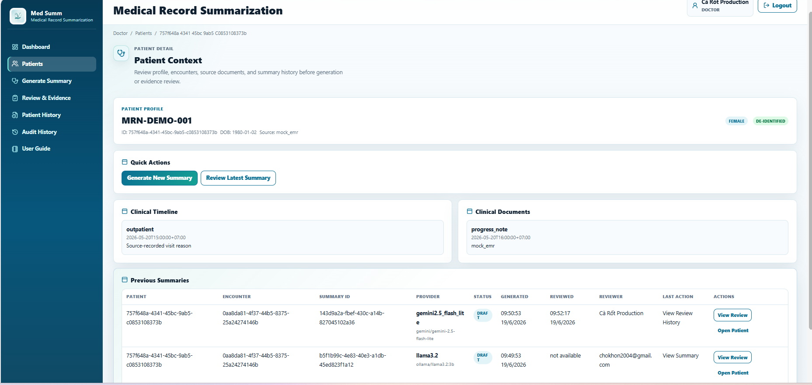
Figure 6 — Patient Context and Timeline
Patient/encounter scope is the first safety guardrail against wrong-patient evidence and context mixing.
Draft generation
 Figure 7 — RAG Evidence-First Generate Summary
Figure 7 — RAG Evidence-First Generate Summary
APatient-scoped retrievalEvidence is retrieved before provider inference.
BProvider selectionProviders can be compared for proxy evaluation and demo flow.
CDraft-only generationThe generated summary requires clinician review before use.
Key differentiator
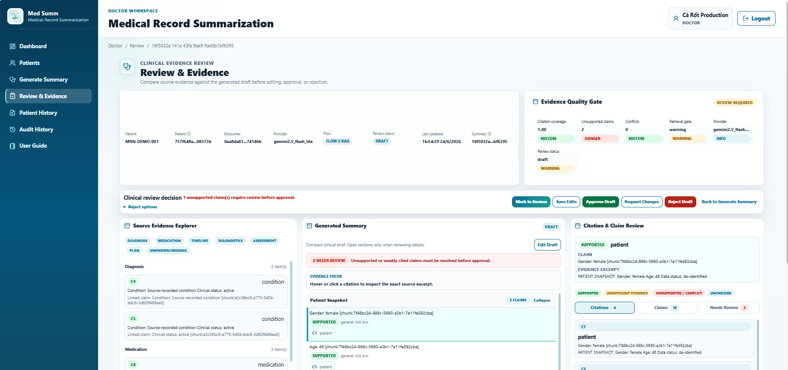
Figure 8 — Review and Evidence Quality Gate
Citation coverage
Unsupported claims
Conflicts & retrieval warnings
Claim review
 Figure 9 — Citation and Claim Review
Figure 9 — Citation and Claim Review
Evidence trace
 Figure 10 — Citation Tracking Detail
Figure 10 — Citation Tracking Detail
Citation is not decoration; it is the review mechanism that lets a clinician inspect the source behind a generated claim.
HITL decision
 Figure 11 — Editable Draft and Reject Decision
Figure 11 — Editable Draft and Reject Decision
Clinician remains final authority.
- Edit the draft
- Approve only after review
- Request revision
- Reject unsupported draft
- Decision is recorded
Lifecycle
 Figure 12 — Patient Summary History Status
Figure 12 — Patient Summary History Status
Audit trail
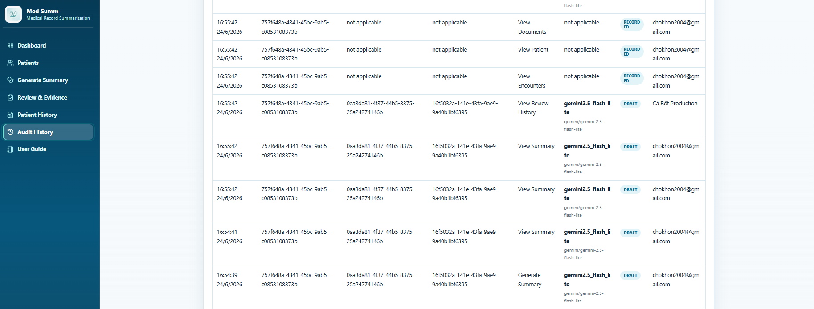
Figure 13 — Audit History Trace
Auditability turns the PoC from a simple demo into a reviewable enterprise workflow foundation.
Doctor
Pain: long records → Feature: cited draft review → Value: faster evidence inspection.
Admin / Evaluator
Pain: hidden benchmark state → Feature: dashboards → Value: visible readiness and artifacts.
Technical Reviewer
Pain: unverifiable runtime → Feature: Docker/test/build evidence → Value: repeatable demo proof.
Research Evaluator
Pain: shallow metrics → Feature: grounding and safety proxy → Value: better study design.
Mentor / Reviewer
Pain: fragmented delivery story → Feature: enterprise deck + evidence package → Value: fast high-level review.
User LayerDoctor UI / Admin UI
Application LayerReact Frontend / FastAPI Backend
AI/RAG LayerChunking / Retrieval / Context Builder / Provider Gateway
Safety LayerCitation Service / Safety Service / Review Service
Data & Runtime LayerPostgreSQL / Redis-RQ / Artifacts / Docker Compose
01Clinical note
02Patient / encounter scope
03Chunking
04Retrieval
05Context builder
06Generation
07Citation matching
08Safety metrics
09Clinician review
Design intent: citation-grounded RAG structures evidence for review. It is not a clinical correctness guarantee.
Human validation future
Grounding and safety proxy: citation coverage, unsupported claims, factuality proxy, omission proxy
Text similarity: ROUGE-L and BERTScore
Text similarity
Evidence grounding
Safety proxy
Workflow review
Human validation future
BERTScore
Semantic metric
computed
Qwen2.5
Strongest generative provider
proxy run
Deterministic
Smoke/control provider
most reliable
Provider ranking
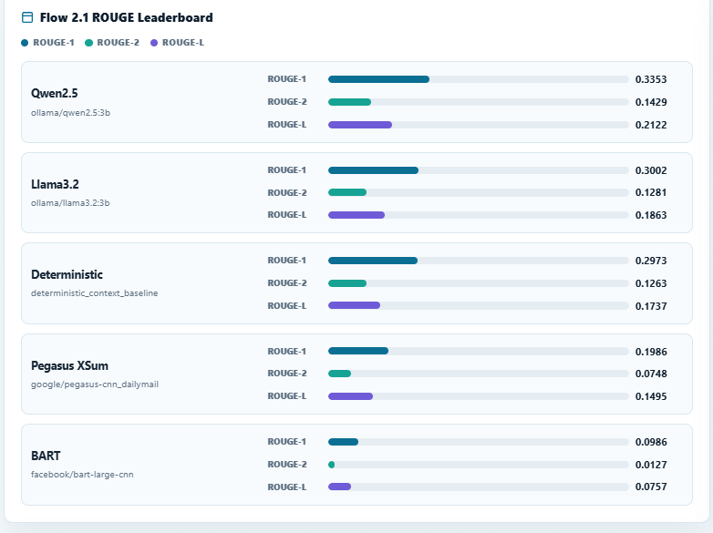
Figure 16 — Provider ROUGE Leaderboard
Proxy evaluation only — not clinical validation, not real EHR validation, and not a clinical safety/effectiveness claim.
Interpretation is limited to proxy evaluation artifacts. It does not establish clinical safety or effectiveness.
Readiness
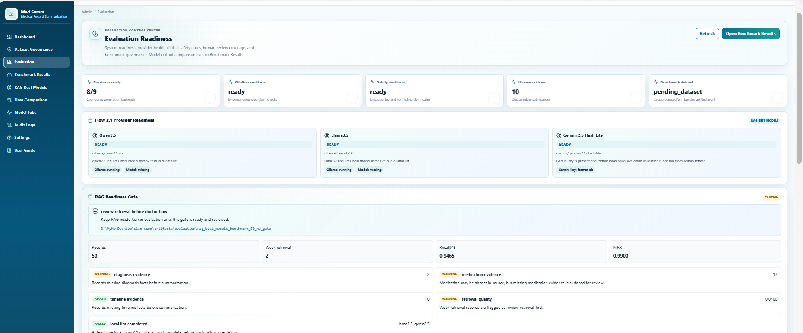
Figure 14 — Admin Evaluation Readiness
Flow 2.1 visibility
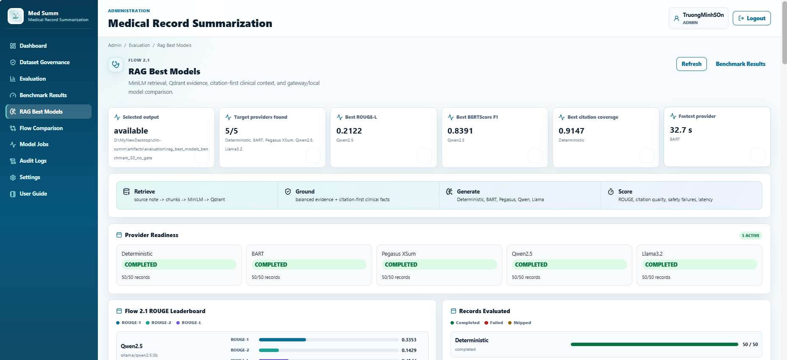
Figure 15 — RAG Best Models Admin Overview
Grounding metrics
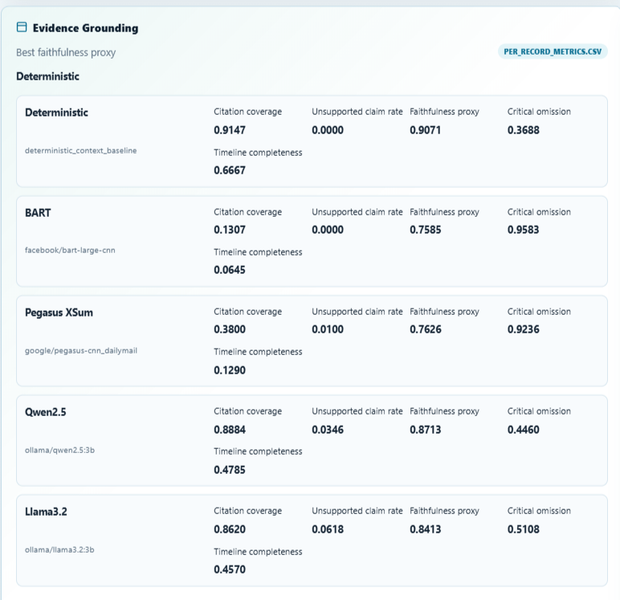
Figure 17 — Evidence Grounding Metrics
Admin users can inspect provider completion, ranking signals and evidence-grounding metrics from the product surface.
RAG vs raw
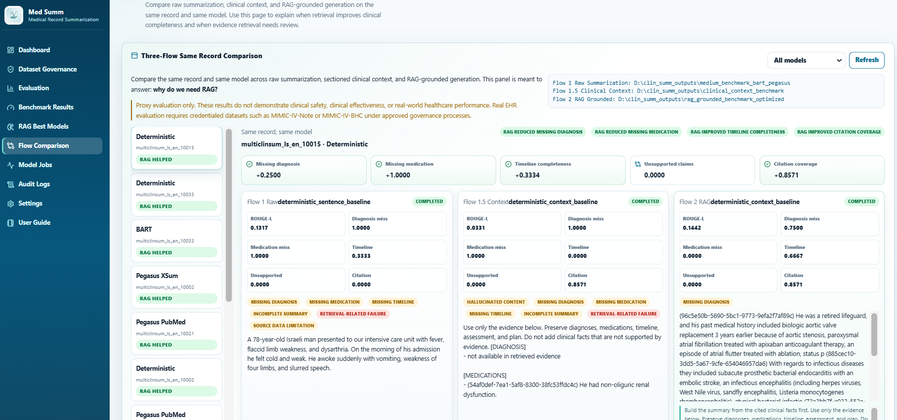
Figure 18 — RAG vs Raw Context Comparison
Failure diagnosis
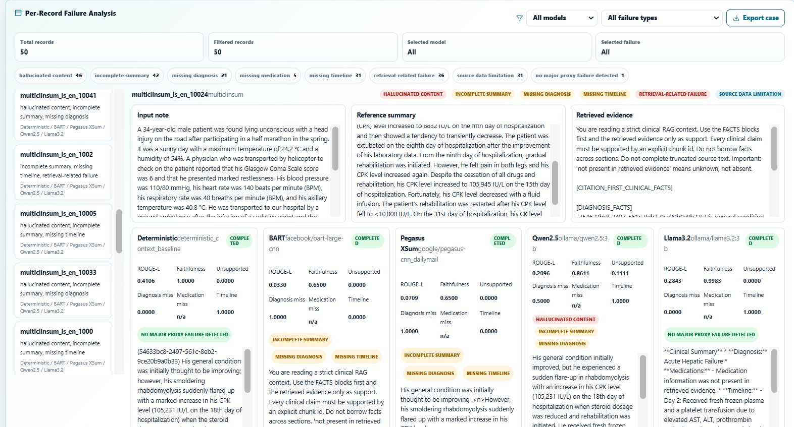
Figure 19 — Per-Record Failure Analysis
Reproducibility
 Figure 20 — RAG Benchmark Artifacts and Run Files
Figure 20 — RAG Benchmark Artifacts and Run Files
predictions
metrics
manifests
reports
failure analysis
Runtime checklist
 Figure 21 — Technical System Running Checklist
Figure 21 — Technical System Running Checklist
Evidence folder
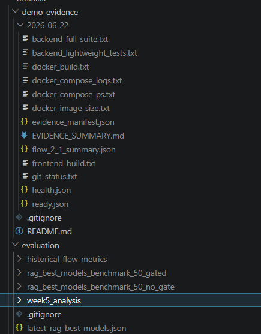
Figure 22 — Evidence Package Folder Structure
Evidence package
 Figure 23 — Latest Running Test Evidence
Figure 23 — Latest Running Test Evidence
/health
/ready
tests
frontend build
Docker build
logs / artifacts
01PoC local staging
02Governance / workflow discovery
03Retrospective de-identified study
04Raw vs Structured vs RAG vs Adaptive comparison
05Clinician human evaluation
06Silent / shadow mode
07Clinician-visible usability pilot
Governance first: no real EHR evaluation, writeback or clinical workflow use without approved data access, review protocol and audit controls.
Key risks
- Wrong-patient evidence
- Unsupported diagnosis
- Medication / allergy error
- PHI leakage
- Over-trust
Controls
- Patient / encounter filters
- Citation validation
- Unsupported-claim visibility
- Clinician review
- Audit trail and governance gates
Final position: a research-first pilot foundation and production-readiness roadmap — not a production clinical system.